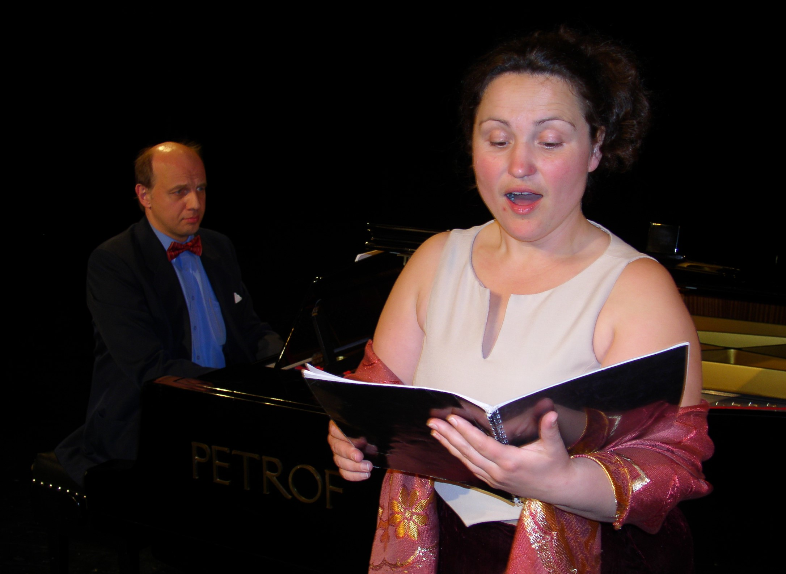
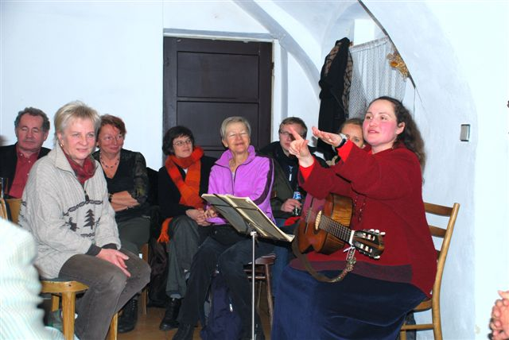
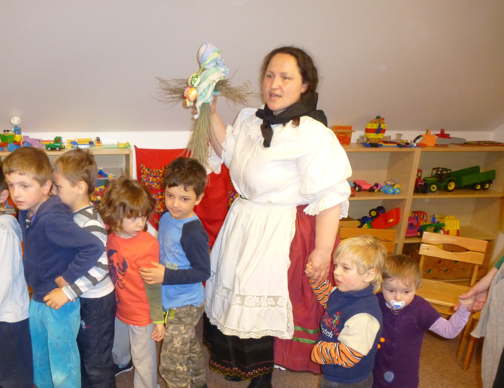
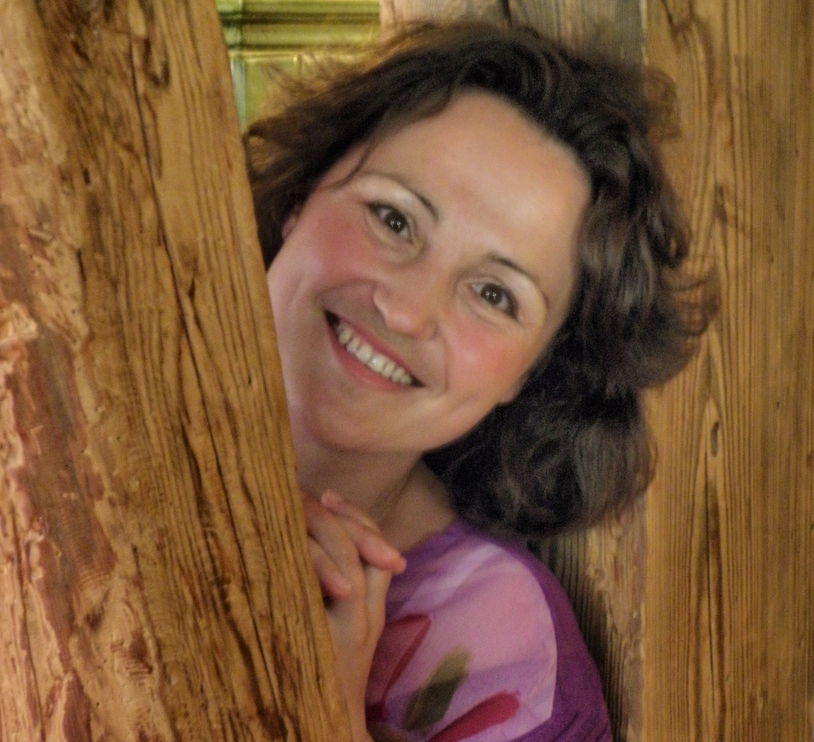
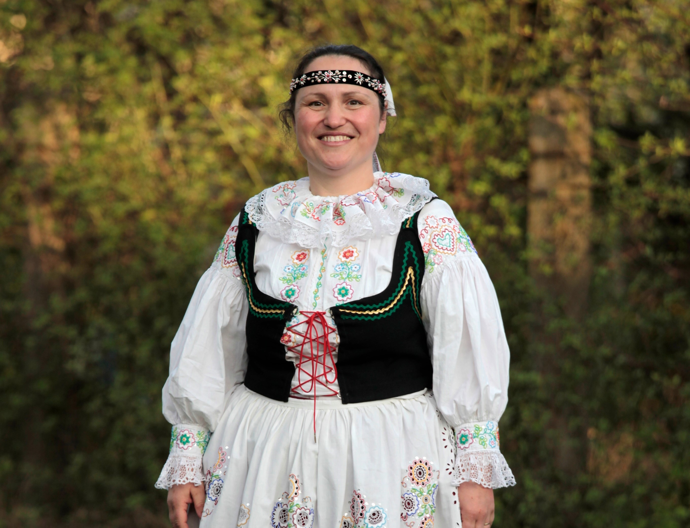
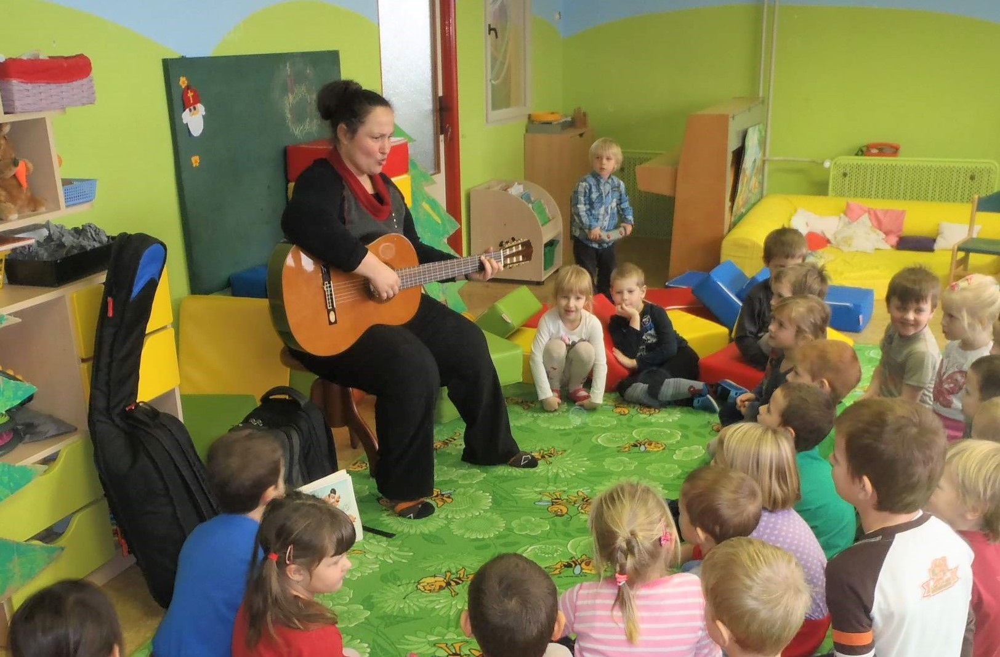

Marta Angela
Vašíčková Vávrová
Marta Angela pochází z jihočeské Křemže, malebné obce ležící nedaleko Českého Krumlova. Už od mládí byla úzce spjata s hudbou a lidovou tradicí, které se později staly nejen jejím povoláním, ale i celoživotním posláním. Vystudovala operní zpěv u profesorky Inge Švandové–Koutecké a své vzdělání si dále prohloubila studiem v Berlíně, kde rozvíjela svou pěveckou techniku i interpretační cit.
Videotéka
Marta Angela má bohaté zkušenosti s vedením hudebních kurzů a dlouholetou pedagogickou praxi. Věnuje se výuce zpěvu, kytary a zobcové flétny, předává dětem i dospělým znalosti lidových tradic a tance a připravuje také malé předškolní děti v hudební přípravce. Její práce je charakteristická citlivým přístupem, nadšením a hlubokým respektem k tradici.
Galerie
Marta Angela se zapsala i do kulturního života regionu. Založila Živý Betlém v Českém Krumlově, který po dobu sedmi let režírovala, a stála také u zrodu Živého Betléma ve své rodné Křemži. Je zakladatelkou skupiny KAPKA a dirigovala i vedla pěvecký sbor u Školských sester U Svatého Josefa v Českých Budějovicích. Její životní cesta propojuje profesionální uměleckou úroveň s hlubokým vztahem k lidové kultuře a pedagogické práci. Svou činností tak dlouhodobě obohacuje hudební i společenský život jižních Čech.






Audiotéka
Vedle klasického zpěvu absolvovala Marta Angela také školu folklorních tradic a tanců v Brně, čímž si rozšířila umělecký záběr o oblast lidové kultury, která je jí dodnes velmi blízká. Ve své umělecké dráze spolupracovala s renomovanými soubory a orchestry, mimo jiné s Musikou Bohemicou, Českým barokním triem i s Bratislavskou filharmonií. Nahrála dětské CD Já mám koně, vraný koně a rovněž úspěšné dvojCD s Musikou Bohemicou.
Čtyři písně z jižních Čech
Holka modrooká
Kočka leze dírou
Pásla ovečky
Okolo Třeboně
Kůň vraný sedlaný
Prší prší
Šla Nanynka